Built by Eugene Holtzman around the belief that the right opportunity can change the trajectory of a person and a business.
Sales playbook
Choose the play you need
Use this as a quick operating hub for prospecting, market intelligence, buyer conversations, meeting prep, and deal execution.
01
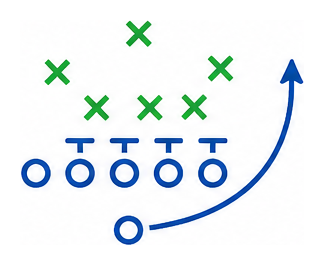
FoundationCompany story and positioning. 02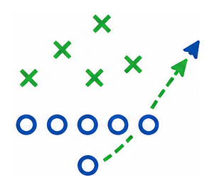
Pitching MMIValue prop and proof points. 03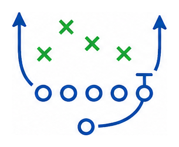
Sales LifecycleResearch to filled role. 04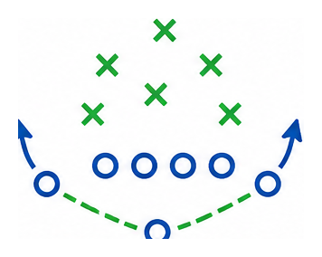
ProspectingSignals, campaigns, cadence. 05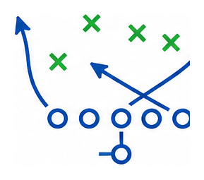
Market IntelligenceData and market briefs. 06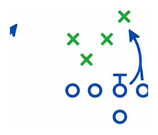
Buyer StrategyPersonas and account motion. 07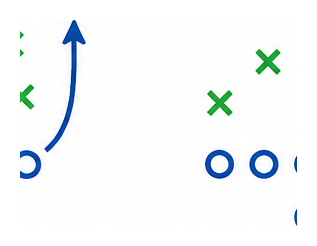
NetworkingWarm paths and referrals. 08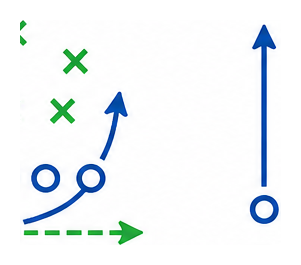
Calls & MeetingsCalls, intros, job orders. 09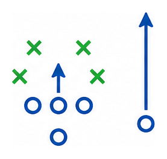
Prep, Debrief, CloseAdvance the deal cleanly. 10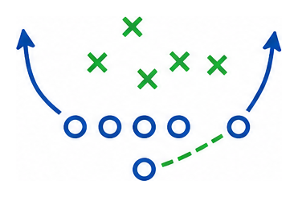
Technology SOPUse the sales stack well. 11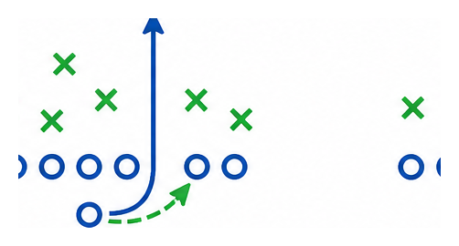
First DealKeep wins repeatable. 12ResourcesAll tools, files, and prompts.Foundation
Who Mitchell Martin is
Sell from the company story: people-first relationships, specialized talent, employee ownership, and a practical blend of human insight with smart technology.
Every team member has a stake in long-term outcomes, which supports accountability, urgency, and care in client relationships.
Distributed teams and long-term candidate relationships give MMI broader sourcing reach without losing relationship context.
Smart tools help us move faster, but human judgment is what turns a resume, requirement, or signal into the right match.
People first, always
MMI starts with people: candidates looking for meaningful work, clients trying to build stronger teams, and colleagues accountable to one another.
Specialized enough to matter
Across IT, healthcare, healthcare IT, and professional services, the value is focus: recruiters who understand the role, setting, skills, and hiring pressure.
Relationships before transactions
The sales motion should feel consultative. Lead with trust, transparency, useful market context, and a commitment to outcomes beyond one requisition.
People first, always
Every decision we make starts with people in mind, whether it is a consultant, client, or team member.
Act like an owner
We take responsibility and care about the long term because this company belongs to all of us.
Stay hungry, stay human
We are ambitious, competitive, and growth-minded, but never at the cost of integrity, kindness, or empathy.
Move with purpose
We are always agile, with smart technology supporting our speed and people leading our purpose.
Stronger together
We believe success is shared. We support one another and give back wherever we can because we are stronger together.
Core positioning
Mitchell Martin helps organizations build capable teams by combining specialized recruiting expertise, long-term candidate relationships, market context, and technology-supported delivery.
When a buyer asks why MMI
We are people-first, employee-owned, and structured around the realities of specialized hiring. That means faster alignment, better fit, and a team that owns the result.
When a buyer worries about fit
We look beyond keyword matching. We qualify for role requirements, environment, manager expectations, schedule, compliance needs, and what will make the person successful after day one.
Use the foundation when...
You are opening a first meeting and need a simple company story.
The buyer has only seen MMI as a resume supplier.
You need to connect employee ownership to accountability.
You are selling a specialized IT, healthcare, or healthcare IT role.
The client cares about quality, compliance, and speed at the same time.
Pitching MMI
Turn the value prop into a conversation
Use this section to explain who we are, why we matter, how we deliver, and where the proof shows up in client outcomes.
Who we are and why we matter
Technology and talent should reduce risk, not add complexity.
Our mission is to help organizations execute faster and with confidence by reducing uncertainty in both delivery and hiring.
We combine deep technology and operating expertise with proprietary AI platforms that embed intelligence into delivery and talent decisions.
Mitchell Martin delivers technology and talent solutions powered by Ropes.ai and Alex.ai, improving workforce quality, insight, execution, and decision-making across teams.
Who we are and how we deliver
We bridge talent shortages with speed, quality, and confidence.
Clients should not have to choose between moving quickly and knowing the talent is aligned to the work.
Rigor, industry expertise, technology expertise, and AI-supported validation help reduce risk and improve outcomes from day one.
Ropes.ai rigorously tests and pre-vets candidates. Alex.ai enhances insight, execution, and decision-making so hiring becomes a strategic advantage.
Specialized Reach
Distinct IT and healthcare disciplines nationwide, with deep pools across cybersecurity, Salesforce, ERP, Workday, SAP, UI/UX, cloud, Agile/PMO, data science, RPA, and healthcare IT.
Delivery Engine
Hundreds of recruiters across the US, Philippines, and India, with niche pipelines and a recruiter-to-sales ratio built for speed and scale.
Stable + Agile
Over 40 years in staffing, executive tenure averaging over 20 years, employee-owned, privately held, and able to move quickly for customers.
Technology Enabled
Modern tools support sourcing, recruiting, research, communication, redeployment, and market intelligence through the Talent Tech Labs mindset.
Proof of partnerships
Strategic partner, not transactional staffing provider.
In partnership with a major investment bank, Mitchell Martin helped validate and de-risk a long-term staffing strategy under intense regulatory pressure and cost constraints.
By delivering higher-quality, pre-qualified talent faster than internal teams, MMI helped the client shift regulatory work to lower-cost locations without sacrificing quality.
The result was not just successful hiring, but a permanent operating-model change that drove ongoing time and cost savings while maintaining regulatory rigor.
When the buyer cares about risk
"We reduce uncertainty by validating talent before it reaches your team, then using AI-supported insight to keep hiring and execution decisions sharper."
When the buyer cares about speed
"The value is not just more resumes. It is proven, ready-to-perform talent delivered quickly enough to protect project timelines and operating plans."
When the buyer cares about cost
"We help leaders move work into the right operating model without trading away quality, compliance, or manager confidence."
Operating system
The sales lifecycle
A simple path for moving from market signal to filled role. The pipeline only works when there is enough activity at the top to create qualified opportunities at the bottom.
Sales pipeline
Lots of activity at the top creates partnerships at the bottom
Keep the top of the funnel full, qualify steadily, and move only real opportunities into delivery. Trust is not a stage you skip to; it is earned by how cleanly every prior stage is handled.
1
Awareness
High-volume targeted activity: prospects, account signals, introductions, pro-markets, calls, emails, LinkedIn, and market intelligence.
2
Engagement
Convert attention into conversations. Earn replies, meetings, referrals, and permission to diagnose a real business pressure.
3
Job Reqs
Capture qualified requirements with manager, location, work model, rate, urgency, process, pain, and success criteria.
4
Delivery
Align recruiting early, submit calibrated talent, manage interviews, debrief quickly, and keep JobDiva clean.
5
Trust
Close the loop, protect the start, communicate clearly, and turn one filled role into an ongoing partnership.
Partnerships
How MMI achieves sales
Use multiple activity channels to create meaningful conversations
The strongest reps do not rely on one motion. They combine networking, warm paths, references, meetings, and targeted calls so prospects experience MMI as visible, relevant, and useful before a requisition is live.
Networking opportunities for meaningful conversations.
Use events to start relationships, gather market context, and create a natural reason to follow up.
Building on previous interactions to strengthen relationships.
Reference the prior touch, candidate conversation, meeting, referral, or account signal so the call feels earned.
Providing credibility and trust.
Use consultant, candidate, client, and peer references to create warmer paths into managers and decision makers.
Facilitating connections across distances.
Use virtual meetings to move quickly, include delivery, clarify requirements, and keep momentum without waiting for travel.
Initiating contact with potential clients.
Lead with a specific reason, market signal, role angle, or pro-market candidate instead of a generic introduction.
Urgency leading to immediate results.
Use hot calls when timing matters: active openings, leadership changes, project deadlines, escalations, and urgent starts.
Offering a personal touch.
Use in-person time for trust building, deeper discovery, account mapping, and expanding from one relationship to many.
Prospecting
Build pipeline from multiple signal streams
Prospecting works best when each week combines warm network moves, market triggers, data-backed campaigns, and disciplined call blocks.
Opportunity Signals
Referrals
Candidates
Consultants
Clients
New CIO/CTO
News
Job Boards
MSA Accounts
Pro-Market Candidates
Package a newly available consultant with availability, skill set, proof points, and interview windows.
How to start
Pick one strong candidate, identify 15-25 likely managers, and confirm ownership before outreach.
What to do
Lead with the candidate's business value, call after the email, and ask directly when a short intro works.
Success looks like
A meeting, a live role, a referral to the correct manager, or market feedback you can use on the next touch.
Time Block Calls
Protect focused calling time so outreach becomes a repeatable operating habit.
How to start
Build the list 48 hours ahead with Support, group by persona, and preload notes in JobDiva.
What to do
Use PhoneBurner, call in blocks, leave tight voicemails, and log outcomes before moving on.
Success looks like
Completed dials, cleaner data, booked follow-ups, and a clear next list instead of scattered activity.
Flip Reference Checks
Use candidate and consultant conversations to create warmer paths back into target accounts.
How to start
Target one company, find people who worked under the manager, and ask about team structure.
What to do
Listen for active projects, hiring pain, manager names, and reasons a team might need support.
Success looks like
A credible referral, a manager name, an account map, or a reason to call with useful context.
Use Market Intelligence
Turn external signals into a point of view before you ask for time.
How to start
Choose a role, region, or vertical and pull hiring trends, compensation, skill scarcity, and posting signals.
What to do
Use Companion to turn raw research into a concise call opener, email angle, and discovery questions.
Success looks like
The buyer hears something specific enough to respond to, correct, or compare against their own hiring reality.
Work MSA Accounts
Use existing client access to expand into new teams, managers, and problem areas.
How to start
Cross-reference JobDiva history, Apollo, LinkedIn, and current openings to find whitespace.
What to do
Call across the account with a relevant proof point and ask who owns the team or hiring plan.
Success looks like
A new stakeholder, updated account map, job order conversation, or internal referral path.
Give Before Asking
Build familiarity with useful touches before making the meeting ask.
How to start
Pick a relevant article, event takeaway, market note, consultant insight, or handwritten card.
What to do
Make the note specific to their team, then follow up with a question that opens conversation.
Success looks like
A reply, a warmer second touch, a reason to reconnect, or permission to send targeted talent.
Trigger Event Outreach
Use leadership changes, funding, layoffs, expansions, projects, and new postings as timing signals.
How to start
Pick one trigger, confirm the source, and identify the manager most likely affected by the change.
What to do
Connect the trigger to a staffing risk: delivery delay, skill scarcity, backfill, budget timing, or ramp speed.
Success looks like
The buyer confirms the signal, redirects you to the owner, or accepts a market comparison conversation.
Consultant Referral Path
Turn active and past consultant relationships into warm paths to managers and peer teams.
How to start
Ask consultants who they report to, which teams are stretched, and where work is backing up.
What to do
Request a name, context, and permission to reference the relationship in a thoughtful way.
Success looks like
A manager introduction, a team map, or credible language for a warmer call.
Pro-marketing strategy
Targeted, compliant outbound methodology
Use this when you have a strong candidate, redeployable talent, or a market-specific value story to bring to hiring managers.
Identify Your Market
Find companies actively hiring, review posted roles, and confirm industry, geography, and market signals.
Identify Hiring Managers
Map the decision maker, influencer, and end user so messaging lands with the right buying role.
Ownership Check
Submit the list for approval, verify client ownership and contact rules, and confirm compliance before outreach.
Build the Message
Clarify the value proposition, choose the strongest persona angle, and promote pro-market candidates or redeployed talent.
Execute Outreach
Use email, calls, LinkedIn, and text. Follow the Mitchell Martin cadence and treat templates as guardrails, not scripts.
Track and Refine
Review results weekly, track replies and movement, and log all outreach in JobDiva.
6-week cadence
Stay visible without sounding canned
Each week has a purpose: first impression, value, connection, live contact, expertise, and a graceful close.
Initial Reach Out
Mon: tailored intro email. Wed: follow-up call and voicemail. Fri: personalized LinkedIn connection request.
Provide Value
Tue: useful resource or article. Wed: engage with a LinkedIn post. Thu: short check-in call.
Build Connection
Wed: send a pro-market profile with market trends. Thu: reinforce with text or LinkedIn message.
Personal Engagement
Mon: friendly check-in email. Fri: quick call referencing prior messages and the candidate profile.
Offer Resources
Tue: reply with commentary or insight. Thu: brief call to see if they reviewed the note.
Final Push
Mon: summary of specific value. Wed: low-pressure LinkedIn message. Fri: final call and referral ask.
Market intelligence
Generate a sales-ready market brief
Build a current, evidence-led point of view for Healthcare, IT, or Finance staffing conversations. Use it before prospecting, intro meetings, pro-marketing, and job-order intake.
Helpful resources
Use pre-built Copilot agents to create client-ready market intelligence for Financial Services, Healthcare, and IT. Bring the insight into outreach so the message sounds consultative, not generic.
Sales angle
Healthcare staffing brief for United States
Current Data Pull
Ready to pull BLS data.
Common Roles in Market
Skill Signals to Search
Client Questions
Talk Track
Outreach Starter
Live sources should be checked before client use. BLS JOLTS is monthly, OEWS wage tables are annual, and LinkedIn/Apollo/JobDiva should be used for account-level validation.
Buyer strategy
Match the sales motion to the account
Buyer personas define the person. Account strategy defines the terrain. Strong selling aligns both.
MSP / VMS
Know program rules, submission windows, response time metrics, ratios, and the program manager's expectations.
PE-Backed
Lead with speed, scalability, transformation support, project staffing, and the ability to keep up with aggressive growth.
Mid-Market
Relationship-building and education matter. These buyers may need help formalizing hiring process and interview discipline.
Enterprise vs. mid-market
Different terrain, same discipline
Enterprise and mid-market accounts buy differently. MMI sells both because each creates a different kind of opportunity: enterprise brings scale, structure, and recurring demand; mid-market brings access, speed, relationship depth, and room to shape the hiring motion.
Structured, layered, and volume-oriented
- Often runs through MSP, VMS, procurement, legal, finance, and formal vendor rules.
- Decision cycles can be longer, but demand can repeat across teams, geographies, and programs.
- Performance is measured through compliance, speed, submittal quality, rate discipline, and program scorecards.
- The sales job is to understand the system, work the whitespace, and become reliable inside the process.
Relationship-led, flexible, and education-heavy
- Access to hiring managers and executives is often more direct.
- Process may be less mature, which creates room to advise on requirements, speed, rates, and interview discipline.
- Deals may start smaller, but a strong first delivery can quickly expand the account.
- The sales job is to teach, diagnose, and build trust with the people closest to the work.
Why MMI does enterprise
Enterprise accounts reward delivery consistency, specialized reach, compliance discipline, and the ability to support recurring demand at scale. They create durable account bases and give MMI room to prove value across multiple buying teams.
Why MMI does mid-market
Mid-market accounts reward consultative selling, speed, education, and strong relationships. They let MMI influence the hiring process earlier, become a trusted advisor faster, and grow from one urgent need into broader partnership.
Why the mix matters
A balanced book protects the business. Enterprise gives scale and repeatability; mid-market gives agility and margin opportunity. Together they create a healthier pipeline and more ways to win.
Who buys your product?
Map the DMU/I before you pitch
Most staffing decisions involve more than one person. Separate the decision maker, day-to-day user, and influencer so your message matches what each person is responsible for.
Characteristic
Decision Maker (DM)
User (U)
Influencer (I)
Who this is
Final authority on using staffing firm
Interacts most with firm and candidates
Shapes decision but does not sign
Common titles
VP of HR, Head of Talent
Hiring Managers, Recruiters
Finance, Procurement, Legal
What they care about
Speed, cost, quality, risk, scalability
Candidate quality, ease of use, speed
Pricing, risk, diversity, compliance
Key questions they answer
"Do we approve this partner?"
"Does this firm make my job easier?"
"Does this partner meet our standards?"
Sales implication
Lead with outcomes and economics
User satisfaction drives future business
Address risks proactively to avoid delays
Trust building
Network before the ask
Use events, associations, user groups, consultants, and LinkedIn to create warmer paths to decision makers.
Event and association plays
- Join client-sponsored charity events and industry round tables.
- Organize events with Marketing when the ROI is clear.
- Prepare three target accounts, three questions, and one follow-up offer before attending.
- Success looks like a scheduled follow-up, referral, or new stakeholder mapped in JobDiva.
Consultant and candidate referrals
- Ask current and past consultants for managers, procurement, HR, and peer referrals.
- Listen for team pressure, project deadlines, turnover, and vendor frustration.
- Ask permission to reference the relationship before making a warm call.
- Success looks like a name, team map, intro, or credible reason to reach out.
Personal network paths
- Use alumni, friends, family, former colleagues, and LinkedIn as inside paths to target accounts.
- Make the ask specific: who owns hiring, which teams use contractors, and what timing matters.
- Follow up with value, not a generic capability pitch.
- Success looks like a cleaner account map or a warm introduction to the right buyer.
Conversation craft
Move every conversation toward a calendar event
Preparation, specificity, open-ended questions, and clean next steps are the core behaviors.
Use Companion before every call, meeting, intake, prep, and debrief
Companion should help you turn research into a sharper agenda, better discovery questions, stronger talk tracks, recap notes, and next-step language. Bring the guide into the workflow before the conversation, then use it again afterward to clean up follow-up and JobDiva notes.
Ask it to pressure-test your plan
Use prompts like: "What am I missing?", "What would a buyer push back on?", "What should I confirm before sending this to delivery?", and "Turn these notes into a concise follow-up with owners and dates."
Business development call
Business development call coach
Use the stepper during a live call. Each step gives the objective, language to try, questions to ask, and the mistake to avoid.
01
Introduction
Earn permission to continue. Be clear, relevant, and brief before you start discovery.
Try this
"Hi, this is NAME from Mitchell Martin. We specialize in IT, Healthcare, and Finance staffing. The reason I am calling is that I work with organizations like yours on hard-to-fill roles and wanted to understand where hiring support may be useful."
Establish who you are, why you called, and why the conversation is relevant.
"Is now a terrible time for a quick question?"
Do not launch into a full pitch before the buyer gives you a reason to continue.
02
Question
Use CORP to move from surface-level contact into useful context: Contact, Organization, Recruitment, Projects.
Try this
"What does your current hiring landscape look like, and where does the process tend to slow down?"
Role, team, priorities, influence.
Business, location, growth, pressure.
Hiring process, candidate flow, challenges.
Upcoming work, skills needed, timing.
03
Sell
Connect Mitchell Martin to what they just told you. Sell to the specific pain, not to a generic capability list.
Try this
"That is exactly where we can be useful. We specialize in finding qualified talent for teams that need speed without lowering the bar."
Repeat the problem in their words before positioning MMI.
Mention market reach, speed, quality, specialization, or relevant delivery experience.
Do not over-explain every service. Keep the value tied to their situation.
04
Action Plan
Translate the conversation into movement. Name what you will do, what you need, and what the buyer should expect.
Try this
"I can pull together relevant market points and examples of talent we are seeing. Who else should be part of that discussion?"
Market data, candidate examples, intro meeting, follow-up email, or job intake.
Confirm stakeholders, send role details, share timing, or approve a meeting.
Do not leave ownership unclear. Every action should have a person and purpose.
05
Next Steps
Anchor the follow-up to a date, time, and reason. Vague agreement fades; calendar commitments move.
Try this
"Would Tuesday at 10:00 work for a 15-minute conversation around the roles and timing you mentioned?"
Date, time, attendees, agenda, and desired outcome.
Restate why the next conversation matters to them.
Do not accept "send me something" unless the follow-up is clearly defined.
06
Close
Confirm agreement, restate the next step, and document the outcome while the call is still fresh.
Try this
"Great, I will send the calendar invite and include a short agenda so we can make the time useful."
Time, attendee, purpose, and what you will send.
Update notes, tags, follow-up task, and next touch date.
Do not end without a clear owner for the next move.
Voicemail
Leave a message that earns a reason to call back
Keep it short, specific, and easy to act on. The voicemail should sound like a useful follow-up is coming, not a generic pitch.
Identify yourself
Name, company, and specialty in one clean sentence.
Give the reason
Reference a role, team, market signal, initiative, or hiring pressure.
Offer value
Signal that you can bring market context, talent availability, or a relevant follow-up.
Set the next touch
Tell them you will send a short email and invite a quick response.
Sample voicemail
"Hi, this is NAME calling from Mitchell Martin. We specialize in IT, Healthcare, and Finance staffing. I was reaching out because we are helping teams compare the market for hard-to-fill roles and I thought the timing may be relevant for your group. I will send a quick email as well. You can reach me at PHONE. Again, this is NAME from Mitchell Martin."
Intro meeting
Turn a first meeting into a relationship and a next date
The intro meeting is the first real impression with a client manager. Use it to prepare well, build rapport, learn pain points, position Mitchell Martin, and leave with a specific next step.
Research before you walk in
Review the company, the client manager, press releases, competitors, initiatives, and any accounts or consultants MMI already knows.
Send a simple agenda
Use three bullets to remind them the meeting is coming and frame the conversation around their priorities, staffing partner expectations, and hiring friction.
Plan the outcome
Know how you will start, what research can create rapport, what you need to learn, and what next step you want before the meeting ends.
Agenda prompts
What are your focus areas this quarter? What makes the best staffing partner for you? What can I do to make your life easier when it comes to hiring?
Build the relationship first
Do not cut straight to the chase. Use natural small talk, active listening, and genuine curiosity to learn the person before the hiring process.
Transition smoothly
When the small talk naturally closes, thank them for their time, restate the purpose, reference the agenda, and ask what they want out of the meeting.
Transition line
"I appreciate you making the time today. I wanted to learn more about your team, your hiring priorities, and where a staffing partner can be useful. Before I jump in, what would make this conversation most helpful for you?"
Use open-ended questions
Questions that start with who, what, where, when, why, or "tell me about" create better information than yes-or-no prompts.
Capture the operating picture
Learn their team landscape, role, major initiatives, candidate types, interview process, competitors, other firms, referrals, and threads to build.
Listen for pain points
Pain points are what make the conversation actionable. If you are talking too much, reset and let the client manager explain what is hard.
Tell me about your team structure and where contractors fit today.
What kinds of candidates have worked well for you recently?
Where does the interview or hiring process usually slow down?
Which hiring pain is most frustrating right now: speed, quality, cost, reliability, flexibility, or niche skills?
Pitch MMI simply
Ask if they have heard of Mitchell Martin. If not, keep the pitch to 30 seconds: employee-owned, niche specialization nationwide, 40+ years, tenured delivery, flexible solutions, and agile execution.
Sell from the pain point
You can only sell well after you know the pain. Tailor the pitch to their specific issue: speed, quality, cost, reliability, flexibility, SOW, RPO, bulk buying, niche talent, or delivery strategy.
Pain-to-sell move
"If speed and candidate alignment are the issue, that is where our delivery model helps. We can calibrate against the role, market, and process before sending resumes so your team is reviewing fewer, stronger fits."
Do
- Set the second date on the first date.
- Be conscientious of their time.
- Actively listen and keep the meeting balanced.
- Send a personalized thank-you email right after the meeting.
- Reiterate one personal and one business topic you discussed.
- Confirm the specific follow-up time, then send the invite.
Do not
- Launch into a full background story about yourself.
- Spend 25+ minutes explaining MMI.
- Quiz them or make the meeting feel transactional.
- Be all personal and no business.
- Be all business and no personal.
- Overstay your welcome.
Qualified job order intake
Capture the details delivery needs before the search starts
A strong job order is specific enough for recruiting to act, clear enough for JobDiva entry, and honest about urgency, process, rate, ranking, and manager expectations. Use the Companion job order guide while you ask questions so you capture enough detail for delivery, not just enough detail to create a record.
Role context
- Why is the position open, and how is the work currently being done?
- What are the project description and day-to-day job duties?
- What is the start date, duration, work hours, shift, and work model?
- Is the role contract, permanent, or contract-to-perm?
Candidate profile
- Required skills, years of experience, education, certifications, and immigration constraints.
- Environment, soft skills, culture fit, and the top three must-have requirements.
- Bill rate, salary if C2H or full-time, and any flexibility around rate or compensation.
Process and close plan
- Hiring manager or HR contact, optional reference number, number of openings, and assigned recruiter if known.
- Interview process, interview time blocks, follow-up day and time, and whether to ask for exclusivity.
- Company and contact must exist in JobDiva before entry.
Delivery alignment
- Qualify the job with delivery early when possible.
- Clarify what makes this order assignable to a recruiter.
- Agree how long delivery has to produce candidates and what happens if the search stalls.
For new recs, fill out the job entry details and route contract roles to jobqueue.contract@itmmi.com and full-time roles to jobqueue.perm@itmmi.com. Add the job description at the bottom of the email or as an attachment.
Use notes to capture context that should be inserted in the Position Remarks section in JobDiva, including process nuance, manager preferences, risks, and delivery guidance.
Objection resolution model
Ask, acknowledge, reframe, advance
Most objections are not final answers. Treat them as information about the buyer's process, risk, timing, or trust level. Slow down, ask a question, and move toward a useful next step.
Objection coach
Turn pushback into a next step
Type the buyer's objection, then generate a response using the Ask, Acknowledge, Reframe, Advance model.
Enter an objection to build a response.
Response space
Your generated coaching plan appears here. Use it to guide the live call, then tighten the wording into your own voice.
Approved vendor / vendor list
Ask how vendors get added, when reviews or QBRs happen, and whether niche partners are used for hard-to-fill roles.
Try: "Are you asking about vendor status because you have a current opening that has been challenging to fill?"MSP / VMS program
Respect the program, then learn the tool, program owner, review cycle, and whether managers can use niche support.
Try: "We understand the VMS model. Which program are you using, and where do you see the biggest delivery gaps?"HR owns all hiring
Work with HR, but confirm the manager's role in defining must-haves, pain, process, and contractor needs.
Try: "So I do not waste HR's time, what must-haves should I reference when I reach out?"Fees, rates, or price is too high
Shift from price to vacancy cost, market reality, contingent value, speed, quality, and what the buyer gets for the fee.
Try: "How long has this role been open, and who is carrying the extra workload while it remains unfilled?"Why MMI?
Lead with niche recruiting teams, passive candidate reach, research capability, delivery scale, references, and proven market access.
Try: "It is not just who we find. It is how we qualify, manage, and deliver candidates against your environment."Bad vendor experience
Do not defend the industry. Ask what happened, identify the service failure, then explain the MMI behavior that prevents it.
Try: "What specifically made the experience bad? I want to make sure I respond to the real issue."Happy with current vendors
Affirm it, then look for gaps: niche roles, time-to-fill, candidate quality, coverage, urgency, or comparison value.
Try: "Where do your current vendors struggle when a role is niche, urgent, or hard to calibrate?"Diverse suppliers only
Respect the requirement and position Dale Workforce Solutions or approved diversity partnerships as a path to help.
Try: "We often partner through Dale Workforce Solutions. Would it help if I made an introduction?"Too busy / send me information
Ask what would be useful, avoid generic collateral, and trade the email for a scheduled follow-up.
Try: "Happy to send something. What information would actually be useful, and can we set 10 minutes to tailor it?"No needs / budget not approved
Use timing questions to learn planning cycles, upcoming initiatives, likely skill needs, and when to reconnect.
Try: "When budget is approved, what types of talent do you usually need first?"Resume, feedback, or more candidates
Keep the process moving by anchoring review times, feedback owners, comparison criteria, and what "better" means.
Try: "What would you need to see in the next candidate that this one does not show?"Start date, rate, or interview logistics
Clarify urgency, consequences, decision makers, calendar blocks, and whether the market can support the timing or rate.
Try: "What is driving the date or rate, and where do we have flexibility if the right person is available?"Advance the deal
Prep, debrief, and close as one loop
Interview management is where sales strategy becomes visible. Capture facts, set follow-up times, document in JobDiva, and make the post-close handoff clean enough that onboarding can move without rework.
Prep Candidate
Use the Companion prep guide to confirm alignment, logistics, other opportunities, interest rank, and whether MMI can accept on their behalf.
Prep Client
Use Companion to build a client prep checklist: process stage, culture, why the candidate should choose the role, interview details, and feedback call time.
Debrief + Close
Debrief candidate first, use Companion to organize the intel for the client close, then document the path forward.
Let Companion make the follow-through cleaner
After each prep or debrief, use Companion to convert raw notes into risks, selling points, open questions, follow-up language, and JobDiva-ready documentation. The goal is tighter communication and fewer missed details.
Use the submittal template before sending candidates
Pair the Companion guide with the submittal template so every candidate story is clear on fit, motivation, logistics, rate, availability, and why the manager should interview.
Download Submittal TemplateClosing scenarios
Handle the moment that can stall the deal
Use the same discipline as objection handling: clarify the real issue, acknowledge the concern, reframe around business impact, and advance to the next committed action.
Client likes the candidate but is slow to decide
Clarify the decision path, who else needs to weigh in, and what risk exists if the candidate leaves the market.
Advance: Ask for a decision time, backup approver, or a specific final concern to resolve.Candidate has competing interviews or offers
Confirm interest rank, compensation, timing, and what would make this role the preferred choice.
Advance: Pre-close honestly and tell the client what timing is needed to stay competitive.Rate, salary, or margin pressure appears late
Separate budget from value. Confirm what changed, what is flexible, and whether scope or timing can move.
Advance: Bring a clear option set instead of negotiating blindly.Client asks for more candidates
Learn what is missing from the current slate before sending more resumes.
Advance: Ask what a better candidate must show and whether the current candidate is still active.Start date or onboarding is at risk
Confirm required documents, background checks, work location, manager readiness, and assignment record details.
Advance: Assign owners and dates for every open item before the start slips.Permanent placement is moving to offer
Confirm salary, fee terms, start date, guarantee details, invoice placement requirements, and who approves the offer.
Advance: Use Invoice Placement instructions instead of Assignment Record steps.JobDiva deal handoff
Close the win, then protect the start
Once the deal is moving toward onboarding, sales and recruiting each own specific JobDiva checks. The goal is simple: the assignment record should match the real-world deal before onboarding, payroll, billing, or a client manager has to depend on it.
Confirm the job record
- Job title mirrors the consultant contract.
- Location reflects the correct work location.
- Contact is the correct manager.
- Remote, onsite, or hybrid status is accurate.
Confirm candidate details
- Candidate information is corrected before onboarding starts.
- Start date is set in JobDiva.
- Users on the start are emailed after the start date is entered.
Complete bill and pay sides
- Sales completes the bill side after the JobDiva start-record email.
- Recruiting completes the pay side after bill side completion notification.
- Direct placements use the Invoice Placement tab.
Start record created
Watch for the JobDiva notification that the start record has been created.
Bill side completed
Sales enters the bill-side assignment details so client-facing terms line up with the deal.
Pay side completed
Recruiting enters the pay-side assignment details after the bill side is complete.
Route for onboarding
Send new deals to itonboarding@itmmi.com or hconboarding@hcmmi.com. If CDM is involved, send to CDM first.
Special case
3rd parties and ICs on the assignment record
3rd party
First add the 3rd party as a company in JobDiva and classify it as a 3rd Party. On the pay side, set employment category to subcontract, add the corp name, and enter the TaxID.
Independent contractor
On the pay side, set employment category to independent contractor, add the IC's name under corp, and enter the TaxID.
After start
Changes, extensions, and rate changes
Any assignment record changes, extensions, or rate changes should be sent to support@itmmi.com. For untraditional deals, reach out to Jordan before guessing the workflow.
Technology SOP
Use the stack with intent
Each tool has a job. The operating habit is to connect research, outreach, tracking, and market intelligence.
LinkedIn Relationship warm-up and market monitoring
Use LinkedIn to connect with target managers, track role changes, find hiring posts, warm up outreach, and post anonymized pro-markets.
- Watch for new leaders, team growth, project posts, and hiring signals.
- Use profile context to make cold calls and emails feel specific.
- Connect with leaders in the niche before asking for a meeting.
Apollo Prospecting lists, sequences, and campaigns
Use Apollo to build GTM lists, launch outreach sequences, support pro-marketing, and organize hotlists that Support can upload into JobDiva.
- Start with a clear account, persona, or role-based strategy.
- Sequence email, call reminders, LinkedIn touches, and follow-up timing.
- Keep lists clean enough to match against ownership rules.
LinkedIn Recruiter Prospect projects and candidate-to-sales insight
Create projects around your go-to-market strategy, identify managers and candidates in motion, and flip useful candidate conversations into sales intelligence.
- Search for managers, directors, VPs, and open-to-work leaders in your niche.
- Save prospects to projects that map to hotlists or campaigns.
- Use candidate calls to uncover teams, initiatives, managers, and hiring pain.
Talent Insights Market data and account planning
Use Talent Insights to understand company growth, skill pools, geography, openings, talent availability, and hiring pressure.
- Bring data into client conversations before pitching a solution.
- Use market evidence to justify rate, scarcity, and speed-to-submit.
- Compare talent pools before choosing the account or persona angle.
JobDiva System of record and sales discipline
JobDiva is the system of record for companies, contacts, notes, hotlists, job orders, candidates, activity, and reporting.
- Log outreach, ownership context, call notes, job-order details, and next steps.
- Use historical contacts and candidate data to warm up prospecting.
- If it is not logged, the team cannot act on it reliably.
Companion Sales prep, drafting, and follow-up support
Use Companion as a workflow assistant for preparing smarter outreach, summarizing context, drafting first-pass messaging, and tightening next steps.
- Prepare account notes before call blocks or intro meetings.
- Turn raw research into buyer-specific talk tracks and email drafts.
- Summarize meetings into clean follow-up actions that can be logged in JobDiva.
Ropes.ai Candidate trust, fraud defense, and skills proof
Use Ropes.ai when a role needs stronger proof that a candidate is authentic, technically credible, and ready to present with confidence.
- Validate identity, location signals, and candidate authenticity before submission risk reaches the client.
- Create job-specific simulations or assessments from client requirements.
- Use scorecards and proof of work to help hiring managers see how candidates actually solve problems.
Alex.ai AI candidate interviews and fraud-risk signals
Use Alex.ai when the team needs an AI-led candidate interview that records the full screen and gives recruiters stronger visibility into interview integrity before a candidate moves forward.
- Review the recorded interview and full-screen activity for context, confidence, and consistency.
- Use Alex.ai indicators to spot potentially fraudulent answers, outside help, or suspicious response patterns.
- Check IP and location signals as part of the broader candidate trust review before submission or client presentation.
AI Tools Messaging, research, and first drafts
Use tools like ChatGPT, Copilot, Claude, and related AI assistants to speed up drafting and thinking, while still validating anything client-facing.
- Draft messaging, job descriptions, call scripts, and recap notes.
- Create account research summaries and buyer-persona angles.
- Check facts, rates, market claims, and client-sensitive details before use.
After the win
Your first deal starts the next operating rhythm
After the win, move immediately into the correct operational path: Assignment Record for contract and contract-to-perm starts, or Invoice Placement for permanent placements. The goal is to protect billing, pay, onboarding, and client expectations without rework.